实验信息
- 实验名称: 触发器实验
- 实验日期: 2025-11-27
- 数据库: School_Data
- 实验目的: 学习使用触发器（Trigger）来保证数据完整性，理解AFTER触发器和INSTEAD OF触发器的区别和使用场景
实验内容概述
本次实验主要包含以下内容：
- 创建触发器T4，要求插入记录的sage值必须比表中已记录的最大sage值大
- 演示违反触发器T4的操作
- 创建触发器T5，要求更新记录时sage值只能升不能降（工资级别只能升不能降）
- 演示违反触发器T5的操作
- 创建触发器T6，禁止修改编号为00001的记录
- 建立基于students和stu_card的视图，创建INSTEAD OF触发器使视图支持更新操作
环境准备
创建Worker表
CREATE TABLE Worker(
Number CHAR(5),
Name CHAR(8) CONSTRAINT U1 UNIQUE,
Sex CHAR(1),
Sage INT CONSTRAINT U2 CHECK (Sage<=28),
Department CHAR(20),
CONSTRAINT PK_Worker PRIMARY KEY (Number)
);
创建Stu_Card表
CREATE TABLE Stu_Card (
card_id CHAR(14),
stu_id CHAR(10) REFERENCES students(sid) ON DELETE CASCADE,
remained_money DECIMAL(10,2),
CONSTRAINT PK_stu_card PRIMARY KEY (card_id)
);
初始数据
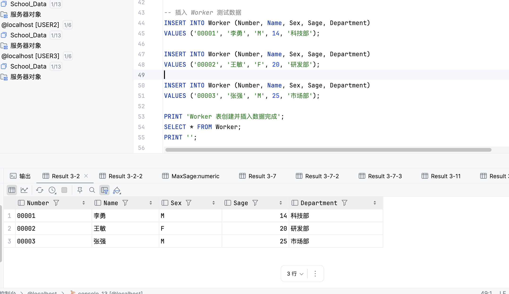
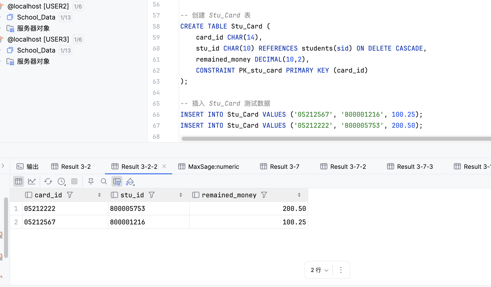
题目1：创建触发器T4
实验目的
在Worker表上创建一个AFTER INSERT触发器T4，要求插入记录的sage值必须比表中已记录的最大sage值大。
实验步骤
1创建触发器T4
CREATE TRIGGER T4
ON Worker
AFTER INSERT
AS
BEGIN
DECLARE @MaxSage INT;
DECLARE @NewSage INT;
-- 获取插入前表中的最大sage值（排除刚插入的记录）
SELECT @MaxSage = MAX(Sage)
FROM Worker
WHERE Number NOT IN (SELECT Number FROM inserted);
-- 如果表为空（第一次插入），@MaxSage为NULL，设置为-1以允许任何值插入
IF @MaxSage IS NULL
SET @MaxSage = -1;
-- 检查插入的记录中是否有sage值小于等于最大值的
SELECT @NewSage = MIN(Sage)
FROM inserted;
IF @NewSage <= @MaxSage
BEGIN
PRINT '错误：插入的sage值必须大于表中已记录的最大sage值';
ROLLBACK TRANSACTION;
END
END;
实验结果
触发器T4创建成功
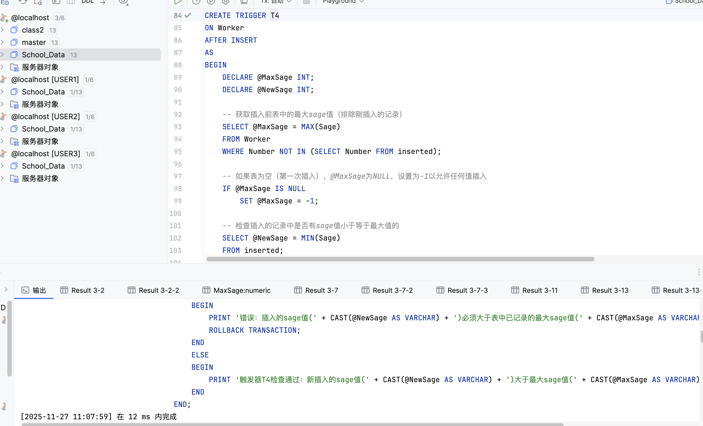
结果分析
- 触发器类型：使用AFTER INSERT触发器，在插入操作完成后执行
- 逻辑实现：通过比较新插入记录的sage值与表中现有记录的最大sage值，确保新值必须更大
- inserted表：SQL Server自动创建的临时表，包含INSERT操作中插入的所有行
- ROLLBACK TRANSACTION：如果违反条件，回滚整个事务，阻止数据插入
题目2：演示违反触发器T4的操作
实验目的
尝试插入一条sage值小于表中最大sage值的记录，验证触发器T4是否有效阻止违反条件的插入操作。
实验步骤
查看当前最大sage值
SELECT MAX(Sage) AS MaxSage FROM Worker;
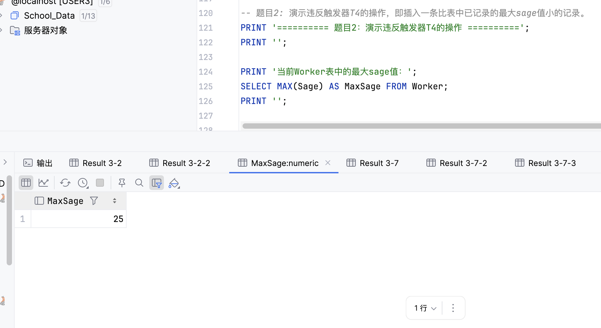
尝试插入违反条件的记录
INSERT INTO Worker (Number, Name, Sex, Sage, Department)
VALUES ('00004', '测试', 'M', 15, '测试部');
实验结果
错误：插入的sage值(15)必须大于表中已记录的最大sage值(25) The transaction ended in the trigger. The batch has been aborted.
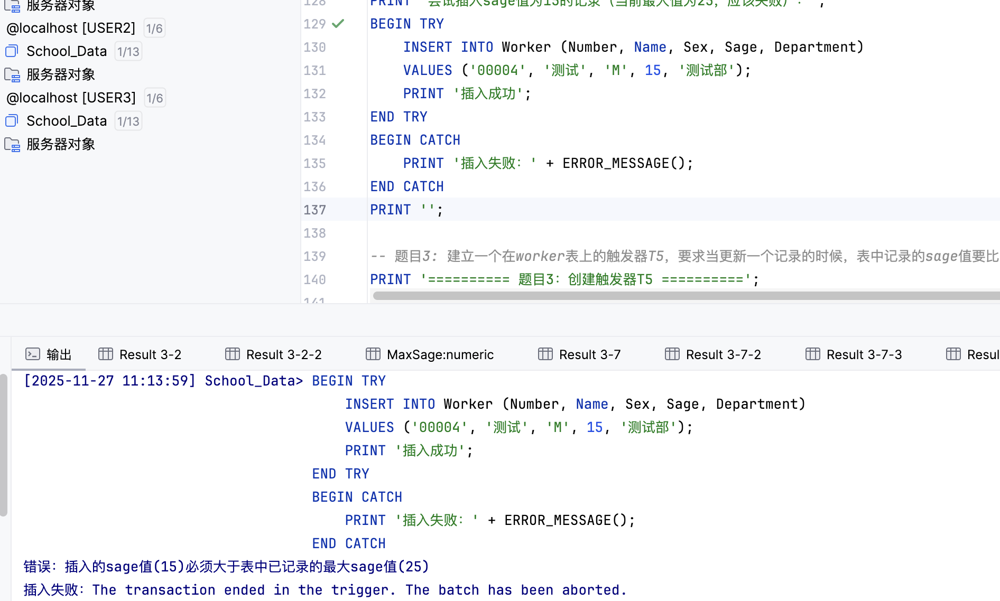
结果分析
- 插入操作被拒绝：因为sage值为15，小于当前表中的最大sage值25，违反了触发器T4的条件
- 触发器生效：触发器T4成功阻止了违反条件的数据插入
- 事务回滚：触发器执行ROLLBACK TRANSACTION，整个插入操作被撤销
- 数据完整性保护：这证明了触发器能够有效保护数据的完整性，确保业务规则得到执行
题目3：创建触发器T5
实验目的
在Worker表上创建一个AFTER UPDATE触发器T5，要求当更新一个记录时，新的sage值必须大于旧的sage值（工资级别只能升不能降）。
实验步骤
1创建触发器T5
CREATE TRIGGER T5
ON Worker
AFTER UPDATE
AS
BEGIN
-- 检查是否有sage字段被更新
IF UPDATE(Sage)
BEGIN
-- 检查更新后的sage值是否小于更新前的sage值
IF EXISTS (
SELECT 1
FROM inserted i
INNER JOIN deleted d ON i.Number = d.Number
WHERE i.Sage <= d.Sage
)
BEGIN
PRINT '错误：更新后的sage值必须大于更新前的sage值（工资级别只能升不能降）';
ROLLBACK TRANSACTION;
END
END
END;
实验结果
触发器T5创建成功
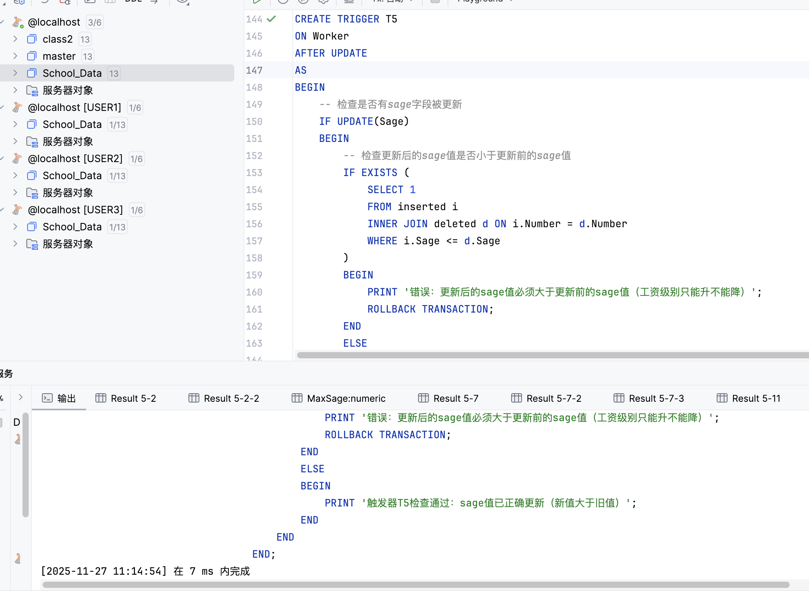
结果分析
- 触发器类型：使用AFTER UPDATE触发器，在更新操作完成后执行
- UPDATE()函数：用于检查特定列是否在UPDATE语句中被修改
- inserted和deleted表：inserted表包含更新后的新值，deleted表包含更新前的旧值
- 业务逻辑：通过比较更新前后的sage值，确保工资级别只能提升，不能降低
题目4：演示违反触发器T5的操作
实验目的
尝试降低sage值（应该失败），然后尝试提升sage值（应该成功），验证触发器T5的功能。
实验步骤
1尝试降低sage值（应该失败）
UPDATE Worker
SET Sage = 18
WHERE Number = '00002';
实验结果
错误：更新后的sage值必须大于更新前的sage值（工资级别只能升不能降） The transaction ended in the trigger. The batch has been aborted.
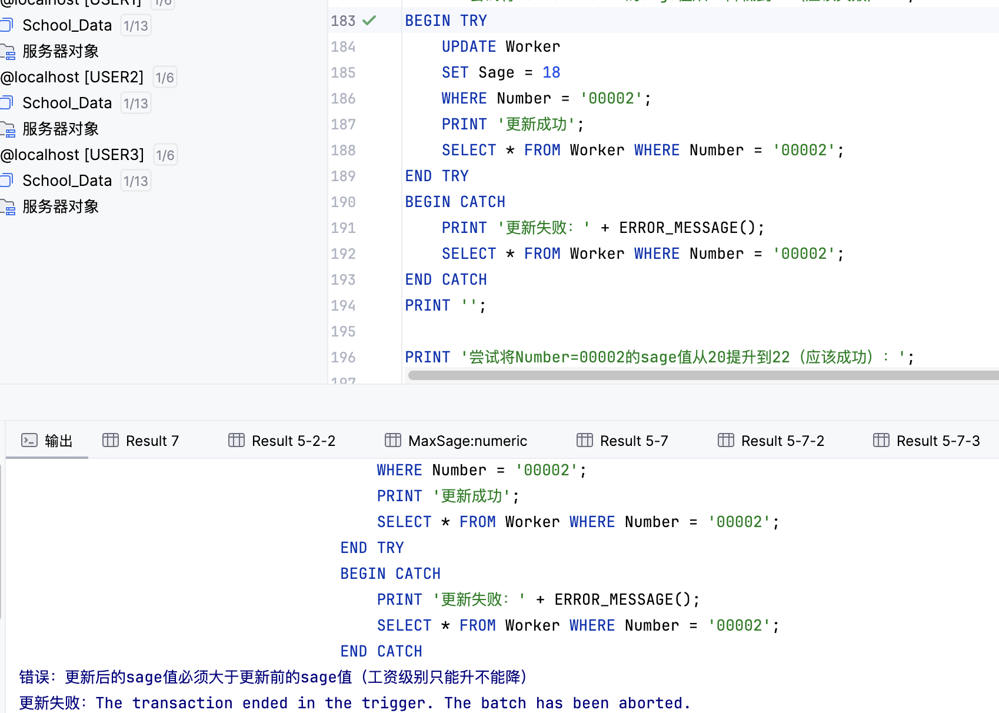
2尝试提升sage值（应该成功）
UPDATE Worker
SET Sage = 22
WHERE Number = '00002';
触发器T5检查通过：sage值已正确更新（新值大于旧值） 更新成功
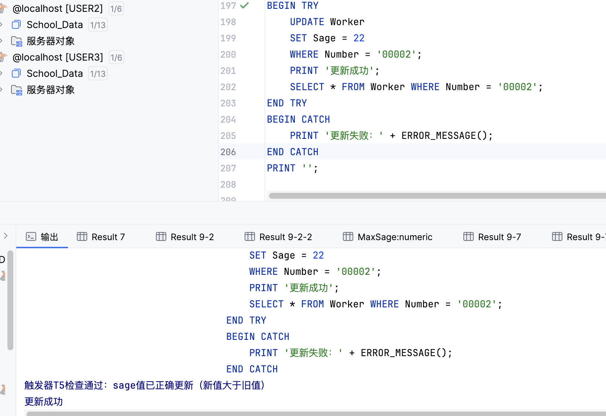
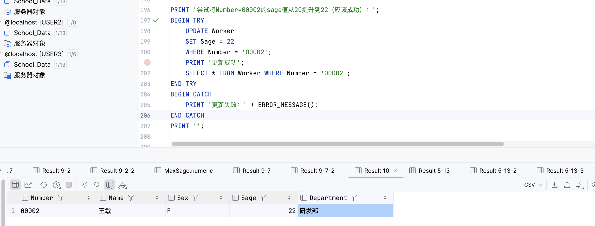
结果分析
- 降低操作被拒绝：尝试将sage从20降低到18时，触发器T5检测到新值小于旧值，执行ROLLBACK回滚操作
- 提升操作成功：将sage从20提升到22时，新值大于旧值，满足触发器条件，更新成功
- 业务规则保护：触发器T5成功实现了"工资级别只能升不能降"的业务规则
- 数据一致性：通过触发器确保数据更新符合业务逻辑，维护了数据的一致性
题目5：创建触发器T6
实验目的
在Worker表上创建一个触发器T6，禁止修改编号为00001的记录（包括更新和删除操作）。
实验步骤
1创建触发器T6
CREATE TRIGGER T6
ON Worker
AFTER UPDATE, DELETE
AS
BEGIN
-- 检查是否有Number='00001'的记录被更新或删除
-- 对于UPDATE：deleted表包含更新前的记录
-- 对于DELETE：deleted表包含被删除的记录
IF EXISTS (
SELECT 1 FROM deleted WHERE Number = '00001'
)
BEGIN
PRINT '错误：禁止修改编号为00001的记录';
ROLLBACK TRANSACTION;
END
END;
实验结果
触发器T6创建成功
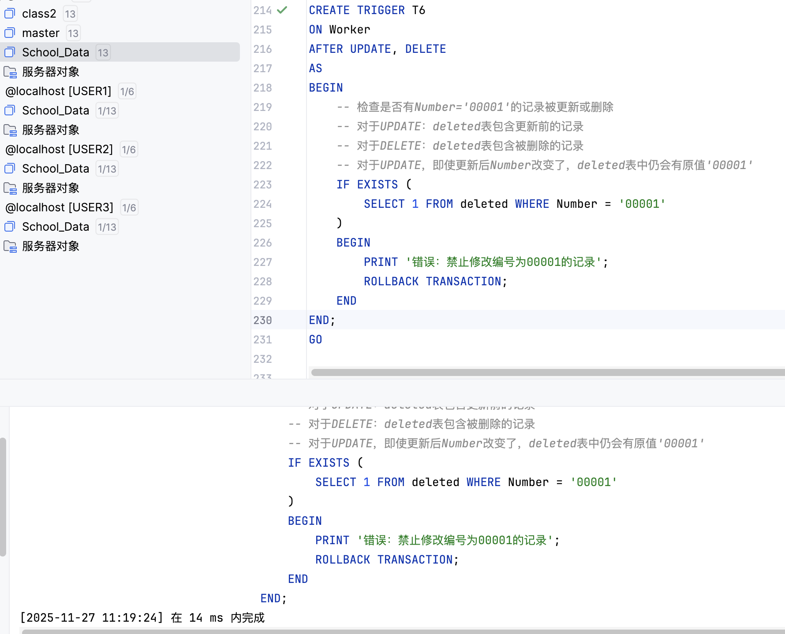
2尝试更新Number=00001的记录（应该失败）
UPDATE Worker
SET Name = '新名字'
WHERE Number = '00001';
错误：禁止修改编号为00001的记录 The transaction ended in the trigger. The batch has been aborted.
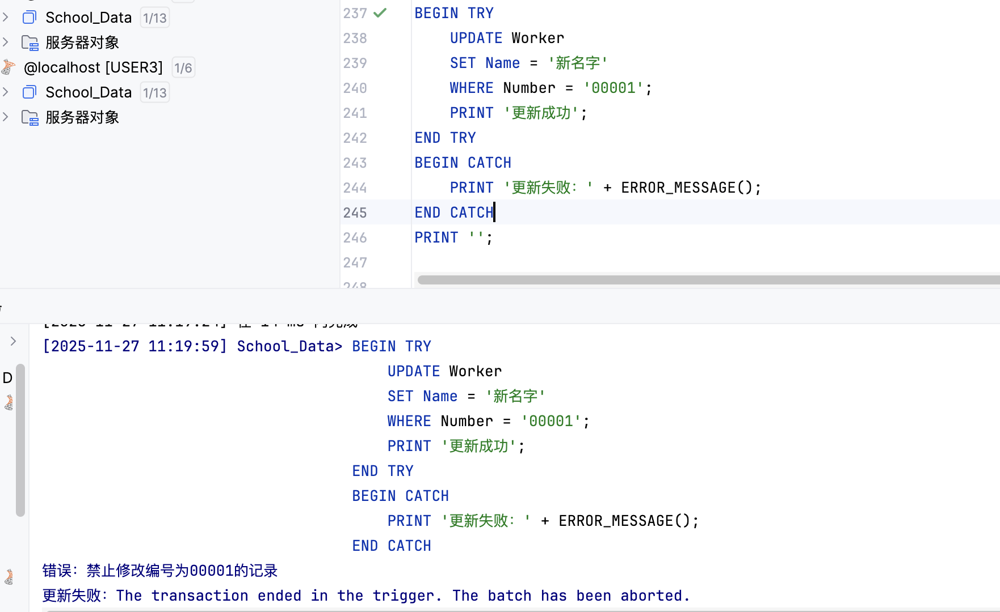
3尝试删除Number=00001的记录（应该失败）
DELETE FROM Worker
WHERE Number = '00001';
错误：禁止修改编号为00001的记录 The transaction ended in the trigger. The batch has been aborted.
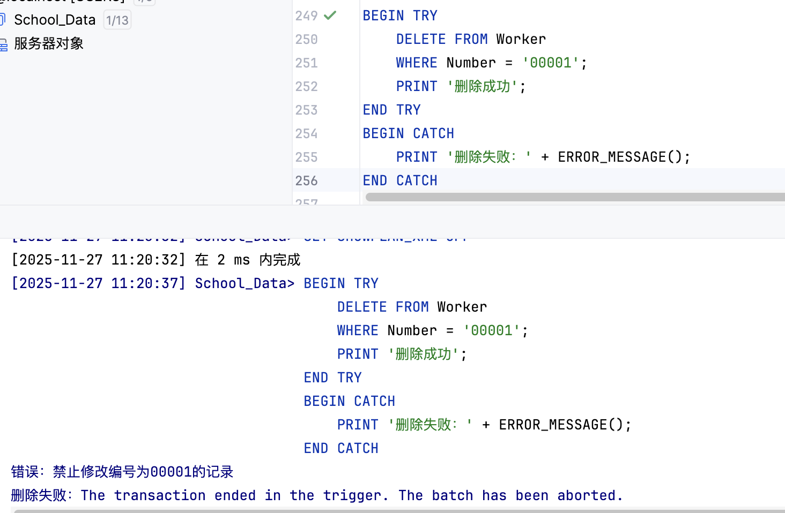
结果分析
- 触发器类型：使用AFTER UPDATE和DELETE触发器，可以同时处理更新和删除操作
- deleted表的使用：对于UPDATE操作，deleted表包含更新前的记录；对于DELETE操作，deleted表包含被删除的记录。通过检查deleted表中是否存在Number='00001'的记录，可以判断是否对00001记录进行了修改
- 保护机制：触发器T6成功阻止了对编号00001记录的任何修改和删除操作
- 数据安全：这种机制可以用于保护关键记录，防止误操作或恶意修改
题目6：创建视图和INSTEAD OF触发器
实验目的
建立基于students和stu_card两个表的视图，创建INSTEAD OF UPDATE触发器使该视图支持更新操作，并演示更新操作。
实验步骤
1创建视图
CREATE VIEW student_card_view
AS
SELECT
s.sid,
s.sname,
s.email,
s.grade,
sc.card_id,
sc.remained_money
FROM students s
INNER JOIN Stu_Card sc ON s.sid = sc.stu_id;
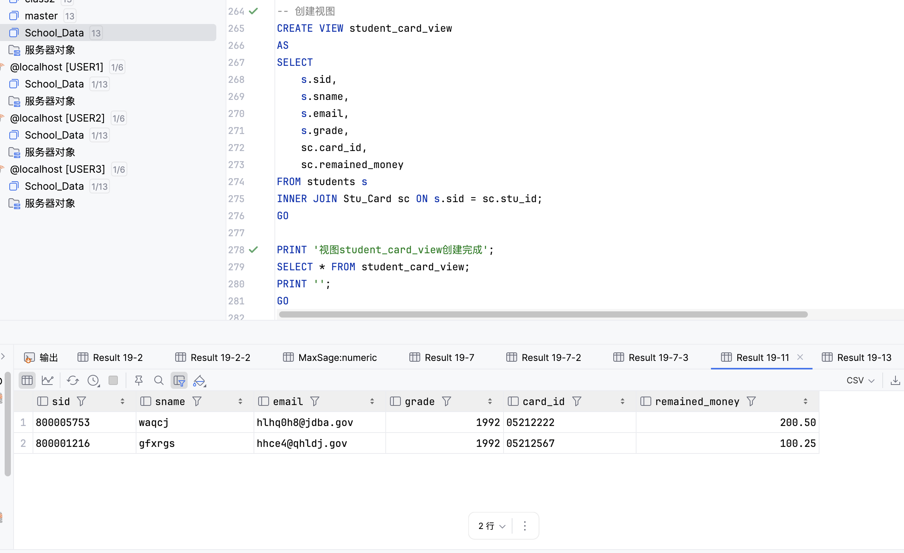
2创建INSTEAD OF UPDATE触发器
CREATE TRIGGER trg_student_card_view_update
ON student_card_view
INSTEAD OF UPDATE
AS
BEGIN
-- 更新students表
UPDATE students
SET
sname = i.sname,
email = i.email,
grade = i.grade
FROM students s
INNER JOIN inserted i ON s.sid = i.sid;
-- 更新Stu_Card表
UPDATE Stu_Card
SET
remained_money = i.remained_money
FROM Stu_Card sc
INNER JOIN inserted i ON sc.stu_id = i.sid;
PRINT '视图更新成功：已同步更新students表和Stu_Card表';
END;
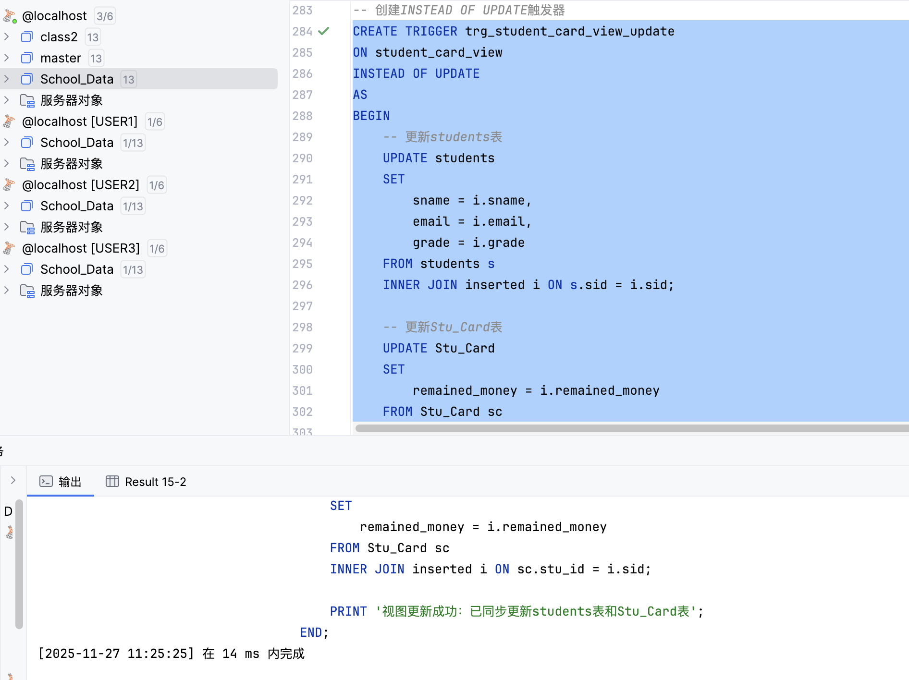
3通过视图更新数据
UPDATE student_card_view
SET
sname = '张三（已更新）',
remained_money = 150.75
WHERE sid = '800001216';
视图更新成功：已同步更新students表和Stu_Card表
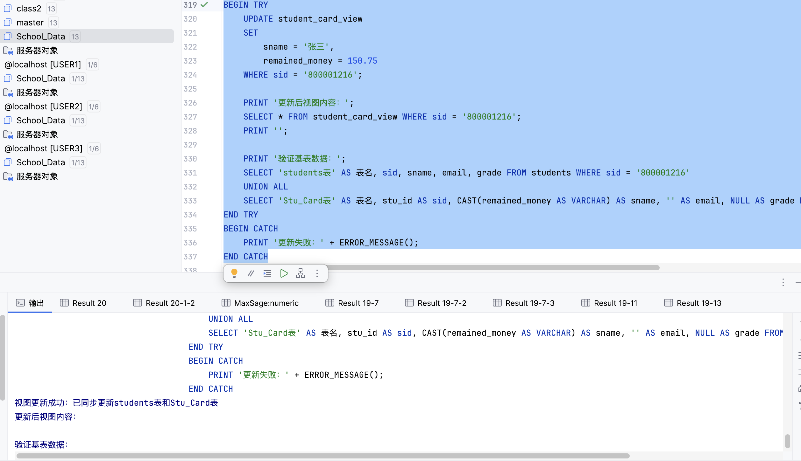
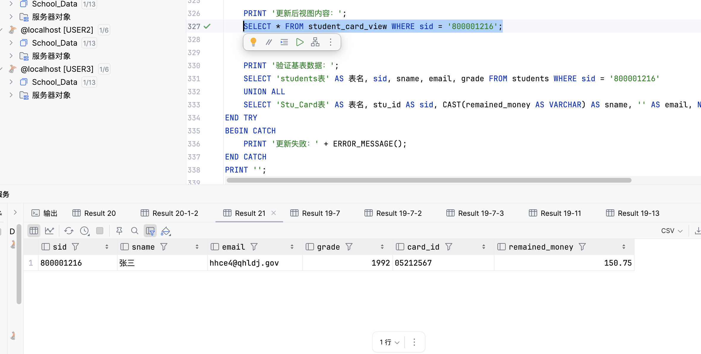
结果分析
- 视图的作用：视图是基于一个或多个表的查询结果，提供了数据的逻辑视图，简化了复杂的查询
- INSTEAD OF触发器：INSTEAD OF触发器在触发事件（如UPDATE）发生之前执行，替代原始操作。对于视图，INSTEAD OF触发器允许我们定义如何将视图的更新操作转换为对基表的操作
- 多表更新：由于视图基于两个表（students和Stu_Card），INSTEAD OF触发器需要分别更新两个基表，确保数据同步
- 数据一致性：通过INSTEAD OF触发器，我们可以确保通过视图更新时，相关的基表数据都能正确更新，维护数据的一致性
- 业务逻辑封装：INSTEAD OF触发器将复杂的多表更新逻辑封装在触发器中，用户只需对视图进行简单的UPDATE操作即可
实验总结
主要知识点
- 触发器（Trigger）：触发器是一种特殊的存储过程，在特定事件（INSERT、UPDATE、DELETE）发生时自动执行。触发器可以用于实现复杂的业务规则和数据完整性约束。
- AFTER触发器：在触发事件完成后执行，可以访问inserted和deleted表。AFTER触发器常用于数据验证、审计日志、级联操作等场景。
- INSTEAD OF触发器：在触发事件发生之前执行，替代原始操作。主要用于视图，允许定义如何将视图的操作转换为对基表的操作。
- inserted和deleted表：SQL Server自动创建的临时表。inserted表包含INSERT或UPDATE操作后的新值，deleted表包含DELETE或UPDATE操作前的旧值。这些表只在触发器执行期间存在。
- ROLLBACK TRANSACTION：在触发器中执行ROLLBACK可以回滚整个事务，阻止数据修改操作。这是触发器实现数据验证和业务规则的重要机制。
- UPDATE()函数：用于检查特定列是否在UPDATE语句中被修改，可以用于条件判断，只对特定列的更新执行相应逻辑。
触发器与约束的区别
- 执行时机：约束在数据修改时立即检查，触发器在数据修改后（AFTER）或之前（INSTEAD OF）执行
- 功能复杂度：约束只能进行简单的条件检查，触发器可以执行复杂的业务逻辑和多个SQL语句
- 性能：约束的性能通常更好，触发器的执行需要额外的开销
- 使用场景：约束用于简单的数据验证，触发器用于复杂的业务规则、审计、级联操作等
实验心得
通过这次实验，我对触发器的使用有了更深入的理解。触发器是数据库系统中实现复杂业务规则的重要工具，它可以在数据修改时自动执行相应的逻辑，确保数据的完整性和一致性。AFTER触发器适合用于数据验证和审计，而INSTEAD OF触发器则非常适合用于视图，使视图支持更新操作。在实际应用中，需要根据具体需求选择合适的触发器类型，同时要注意触发器的性能影响，避免过度使用。